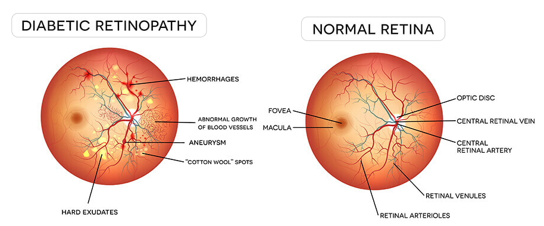
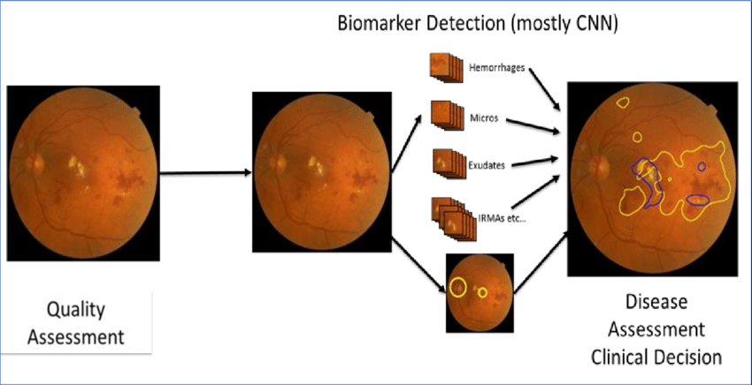

Introduction: A Vision for the Future: Detecting Diabetic Retinopathy with Machine Learning
The health care industry produces a massive amount of data. This data is not always made use to the full extent and is often underutilized. Applying predictive analysis on these datasets, a disease can be detected, predicted, and help in getting treatment at an early stage. A considerable threat to humankind is caused by conditions like cancer, diabetes, or even brain tumor. Diabetic retinopathy (DR) is an extreme eye infection which happens because of diabetes mellitus, and it has developed as the most widely recognized reason for visual deficiency on the planet. The patient’s vision can be affected by diabetes, which causes cataracts, glaucoma, and, most importantly, damage to blood vessels inside the eye, which can lead to complete loss of vision. There are effective treatments for diabetic retinopathy, but this requires early diagnosis and continuous monitoring of patients with diabetes. Diabetic retinopathy is diagnosed by assessment of retinal images. Since manual diagnosis of these image scans is slow and resource-demanding to determine the severity of DR, for the accurate detection of Diabetic Retinopathy, an efficient machine learning technique is to be developed, which extracts essential features of the retinal scan further to classify the image to different Diabetic Retinopathy severity levels. This system focuses on applying classification and prediction models on retinal images to detect diabetic retinopathy attributes for effective monitoring of the patient’s health conditions.
Revolutionizing Retinopathy Diagnosis with Machine Learning
- To study the present Diabetic Retinopathy disease prediction trends and collect data.
- To implement different technical indicators.
- To perform pre-processing on the dataset gathered to enhance the important features for detecting DR disease.
- To build a prediction model using different machine learning models. We will combine the technical indicators with the dataset and then compare the model accuracy.
- Build a Machine Learning model to predict the level of severity of DR disease.
- To find significant features by applying machine learning techniques.
- To compare different ML models and analyze which model performs more efficiently.
- To overall assist patients and doctors to help detect early signs of DR disease.
The motive behind choosing this project was to use our engineering knowledge to better the world. There is a tremendous amount of machine learning applications in the healthcare industry. The healthcare industry generates a vast amount of data, which is oftentimes underutilized. My primary motivation in choosing this project was to help the people by giving them a chance to improve their lifestyle. Hence, it was decided to make a machine learning-based healthcare project for Diabetic Retinopathy patients who require regular monitoring of their health conditions. The major motivation is that early detection can be done, which leads to initial treatments, thus increasing the chances of better recovery by regularly monitoring the eye scan.
The Eye in Focus: Unveiling Retinopathy
Diabetic retinopathy is a pervasive eye infection in diabetic patients and is the most well-known reason for visual disability/visual impairment among diabetic patients. DR, an interminable, progressive eye disease, has become one of the most common reasons for vision impairment and blindness, especially for working-age people today. It results from prolonged diabetes. Veins in the light-sensitive tissue (i.e., retina) are typically affected in diabetic retinopathy. Non-proliferative diabetic retinopathy (NPDR) occurs when the veins leak blood into the retina. Proliferative DR (PDR), which causes blindness in patients, is the next stage after NPDR.
The progression of DR can be classified into four stages: mild, moderate, severe non-proliferative diabetic retinopathy, and the advanced stage of proliferative diabetic retinopathy. The figure below depicts the different stages of DR disease.

In mild NPDR, small areas in the veins of the retina, called microaneurysms, swell like a balloon. In moderate NPDR, numerous microaneurysms, hemorrhages, and venous beading occur, causing the patient to lose their ability to transport blood to the retina. The third stage, called severe NPDR, results from the presence of new blood vessels, caused by the release of growth factors. The most severe stage of DR is proliferative diabetic retinopathy, in which fragile new blood vessels and scar tissue form on the surface of the retina, increasing the likelihood of blood leakage and leading to permanent vision loss.
Currently, the detection of retinopathy is performed by a well-trained doctor manually identifying vascular abnormalities and structural changes of the retina in retinal fundus images. These images are captured by dilating the retina using a vasodilating agent. Due to the manual nature of DR screening techniques, however, highly inconsistent results are often found across different readers. Therefore, automated diabetic retinopathy detection techniques are crucial for addressing these issues.
Although DR can damage the retina without showing any signs at the early stage, effective early-stage detection can minimize the risk of progression to more advanced stages of DR. Diagnosis is particularly difficult at the early stage because it relies on recognizing the presence of microaneurysms, retinal hemorrhages, among other features in retinal fundus images. Moreover, accurate detection and determination of the stages of DR can significantly improve interventions, ultimately reducing the risk of permanent vision loss.
Earlier systems for automated diabetic retinopathy detection relied on manually crafted feature extraction and traditional machine learning algorithms for prediction. These approaches were time-consuming due to the handcrafted nature of DR feature extraction. Feature extraction in color fundus images is more challenging compared to conventional images for object detection tasks. Furthermore, these handcrafted features are highly sensitive to the quality of the fundus images, focus level, presence of artifacts, and noise. Therefore, these limitations in traditional handcrafted features make it critical to develop an effective feature extraction algorithm to accurately analyze the subtle features related to DR detection.
Project Blueprint: Engineering the Future of Diabetic Eye Care
In this project we use the well-known APTOS 2019 Blindness Detection dataset which is acquired from Kaggle, an online website which contains a large number of publicly accessible datasets. The proposed modules are:
1.1 Data Collection
The dataset is taken from www.kaggle.com which contains about 3662 train images and 1928 test images, a total of 10.2GB of data. The train.csv file contains the diagnosis of the train images, labeling each image ID to the severity level of the disease ranging from 0-4 (0 being the lowest and 4 being the highest severity level). The test.csv file contains the image IDs for the test images.
Figure below depicts a snapshot of a fraction of the unprocessed training images. These are the raw images obtained from the dataset. As we can see, the images are not in a standard form and the lighting conditions of each image vary.

1.2 Data Pre-processing
The raw data collected has to go through a process of normalization in order to get a uniform dataset. Thus we need to pre-process the data for accuracy. The following pre-processing steps were used in order to standardize the retina images:
- Reducing lighting-condition effects: Raw images come with many different lighting conditions, some images are very dark and difficult to visualize. Thus, we convert the images to 50% grayscale.
- Cropping Image: We cropped the image to remove the uninformative outer background.
- Resizing Image: The images were rescaled to get the same radius.
- Removing Image Noise: Using the Gaussian Blur function in the cv2 library, we reduced the image noise for better analysis.
Figure below depicts the pre-processed training images. The entire database has been processed by the mentioned parameters in order to standardize and enhance the attributes which determine the severity of the DR disease.

1.3 Data Splitting
For model training, the train images were split into two sections: ‘Training data’ and ‘Validation data’. The classifier was trained using the training dataset, parameters were tuned using the validation set, and then the test dataset was used to test the performance of the classifier on unseen data. We randomized the train images and split them into a ratio of 3112:550 for the training and validation sets, respectively.
1.4 Building Modelling
We will be using the CNN (Convolutional Neural Networks) model for this project. In recent times, most computer vision problems have been solved with greater accuracy with the help of modern deep learning algorithms. Convolutional Neural Networks (CNNs) have proven revolutionary in fields such as object detection and tracking, image and medical disease classification, pedestrian detection, and action recognition. The critical attribute of CNN is that it extracts features in a task-dependent and automated way.
In this paper, an efficient Neural Network architecture is presented for DR detection in large-scale databases. Our proposed network was designed with a multi-layer CNN architecture followed by two fully connected layers and an output layer. Among all the ML algorithms, we chose DenseNet for image classification and recognition due to its high accuracy. DenseNet (Densely Connected Convolutional Networks) is one of the latest neural networks for visual object recognition. We used DenseNet over CNN because, in DenseNet, every layer gets "aggregate information" from all preceding layers. This makes the system more compact and efficient.
1.5.1 Model 1
The network architecture of our proposed ML Model 1 is as follows. The input layer of the network is 224 x 224 x 3. ReLU was used in all convolutional layers as the activation function for nonlinearity. All Max-Pooling layers used have the same kernel size of 3 x 3. After the DenseNet121 convolutional layers, the Global Average Pooling (GAP) layer was added to reduce overfitting. The final extracted local features were flattened before passing through fully connected layers, each having 1024 neurons. Dropout of 0.5 was included in the fully connected layers to decrease overfitting. Softmax activation function was used at the last output layer to produce normalized outputs. A yield layer of one neuron was included, and we clipped the loss function value between 0 and 4.
Model 1 was compiled using the categorical cross-entropy loss function for single-labeled classification. Adam, an adaptive learning rate optimizer, was used in model compilations.
1.5.2 Model 2
The network architecture of our proposed ML Model 2 is as follows. The input layer of the network is 224 x 224 x 3. After the Sequential Layer, we used predefined DenseNet121 weights. After that, the GAP layer was added to minimize overfitting, followed by a Dropout of 0.5. Sigmoid activation function was used at the last output layer to produce normalized outputs. Model 2 was compiled using the binary cross-entropy loss function for single-labeled classification, with Adam optimizer used during model compilation.
1.6 Evaluation Measures
After training the model, we need to evaluate the results on the training and validation dataset. Based on the evaluation metrics, we tweak the parameters to make the model more efficient. A few standard exhibition measurements, such as Accuracy, Loss, and Quadratic Kappa Score, have been considered for calculating the model's presentation effectiveness.
The Quadratic Kappa Score (k) is calculated as follows:

Both models were trained for 15 Epoch Cycles, and evaluation metrics were calculated at each cycle. The model was saved only when there was an increase in the Kappa Score at the end of each cycle.
System Specifications: Building the Framework for Early Detection
Product Perspective
- The system is run in Python Jupyter and has a user-friendly GUI.
- The system consists of many options in which the chance of heart disease is predicted.
- The predicted value ranges from 0 to 4, where 0 represents a normal eye, 1 represents mild NPDR, 2 represents moderate NPDR, 3 represents severe NPDR, and 4 represents PDR.
- An initial training is required for running the dataset on the machine model in order to do predictions.
- The output from the system includes performance graphs of the ML models and a CSV file containing predictions for all the test images. The user should have some knowledge of how to interpret these outputs.
Product Features
The product has two machine learning models on which the training images are trained. Once the models have been trained, we can run the test images on them and compare the predictions.
User Characteristics
With the help of this system, any user can monitor the severity level of their DR disease and seek the required treatment if needed. This is useful to patients, doctors, hospitals, and the health ministry of the country.
Assumptions and Dependencies
The minimum hardware and software requirements must be met for the proper implementation of this system. The user must provide clear images of their eyes, and the attributes must be visible for analysis.
Domain Requirements
For this project, Python will be used to write the source code, and several libraries such as Pandas, Numpy, TensorFlow, Keras, OpenCV, Scikit-learn, and Matplotlib will be used for data manipulation, machine learning, deep learning, image processing, and plotting.
User Requirements
The user should have proper information about the data used (database), current data, and how to interpret the results to monitor changes.
System Architecture

System Use Case Diagram

Showcase: How Our AI Solution Detects Retinopathy
Dataset Info

Data Pre-Processing

Machine Learning Model 1 Training


Machine Learning Model 1 Evaluation Metrics


Machine Learning Model 2 Training

Machine Learning Model 2 Evaluation Metrics


Prediction Result


ML at Work: Comparing Model Performance for Diabetic Retinopathy
- Model 1 Max Train Accuracy = 83%
- Model 2 Max Train Accuracy = 94%

- Model 1 Min Train Loss = 45%
- Model 2 Min Train Loss = 14%

- Model 1 Max Validation Accuracy = 84%
- Model 2 Max Validation Accuracy = 92%

- Model 1 Min Validation Loss = 6%
- Model 2 Min Validation Loss = 17%

- Model 1 Max Kappa Score = 0.90
- Model 2 Max Kappa Score = 0.78

Difference in Predicted Values by Both Models

Comparison of Predicted Severity Level by Both Models

A Clear Vision Ahead: Final Thoughts on Retinopathy Detection
The motive behind this paper was to develop a system based on machine learning (ML) techniques for monitoring and helping individuals, doctors, health staff, and others. This system aims to provide timely assistance to those in need of medical attention. The work presented here will be useful in identifying potential patients who may suffer from Diabetic Retinopathy, helping to take preventive measures and, ideally, avoid the possibility of total blindness caused by the disease.
In this paper, a novel DenseNet-based deep neural network was introduced to predict the severity level of diabetic retinopathy from retinal image scans, aiding in early-stage treatment. Machine learning techniques were used to process raw images and provide new insights into Diabetic Retinopathy. This system extracts key features from the retinal images, such as retinal veins, optic disc, exudates, cotton wool spots, hemorrhages, and microaneurysms, even from low-quality color fundus images.
We presented two models based on the DenseNet network, using various pre-processing methods to improve the performance of the architecture. Model 1 achieved 84% validation accuracy with a kappa score greater than 0.90, while Model 2 achieved 92% validation accuracy with a kappa score greater than 0.78 in severity grading on the challenging Kaggle APTOS 2019 Blindness Detection dataset. The experimental results demonstrate that our proposed algorithm is adequate for use in clinical applications.